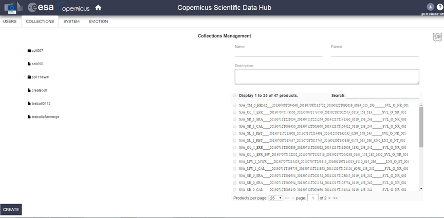

			
<!-- Main -->
	<section class="wrapper style1">
		<div class="container">
			<div id="content">

				<!-- Content -->
			
					<article>
						<header>
							<h2>Administration Guide</h2>
											</header>
     
<b><p align ="justify">Login</b></p>
<p align ="justify">
Once the installation package (see Installation Guide section) has been successfully installed, the DHuS server can be accessed online (https://dhus.xxx.zz) or on local URL (https://localhost/).
To access the administrator panels, it is first necessary to login as root,using the default settings. The button is displayed in the upper right side of the DHuS Home page.

<a href="" class="image left"></a>
<a href="" class="image left"></a> 
<b><p align ="justify"> Panels description</b> </p>
<p align ="justify">
The DHuS provides the Administrator a series of Panels to fulfil every service. We report here how to access them using the GUI.
The list of panels is provided here below:</p>
<p align="left">
<ol>
<li>Search Panel</li>
<li> Upload Panel</li>
<li>Profile Panel</li>
<li>Cart Panel</li>
<li>Management Panel</li>
<ul>
  <li>Users</li>
  <li>Collections</li>
  <li>Sustem</li>
  <li>Eviction</li>
</ul>
<li>Odata synchronizer Panel</li>
</ol>
</p>
<p  align ="justify">
Once the administrator has logged in, the panels are accessible clicking on the ?user icon? on the upper right side of the page.</p>

<a href="" class="image left"></a>  

<b><p align ="justify">Products Upload</b></p>
<p align ="justify">
The Upload feature is available only to the administrator. DHuS system makes available an incoming space to let the user upload a product. Once uploaded, data is processed to be referenced by DHuS clients. This panel gathers all the information necessary to perform the upload (at least the path to the product).
Optional: Assignation of a product to a collection is manually set by the uploader. A product can be included in any collection.

The DHuS allows the ingestion of Sentinels products using 4 methods:</p>
<p>
Ad hoc upload
Creating a file scanner
Synchronizing remote archive
</p>
<a href="" class="image left"></a>
<b><p align ="justify">Products upload methods</b></p>
The first two methods are accessible by the upload panel, the third is accesible via a dedicated odata synchronizer panel:
<a href="" class="image left"></a>
<b><p align ="justify">Ad hoc upload </b></p>
<p align ="justify">
Once in the Upload panel, it is possible to perform the upload of a product: select the input products, then (optiona) select a collection in the list of collections and click on the "Upload" button. The upload will start and at the end of it, a pop up will notify that the upload is over. </p>

<a href="" class="image left"></a>

<p align ="justify">
Upload via file scanner If the upload has to be periodic, a scanner can be configured with the panel highlighted by the red arrow in figure below.
</p>

<a href="" class="image left"></a>
<p align ="justify">
To create a file scanner:
Access the upload panel
Fill the Url to scan field with the path of the folder containing the products (if the products are in the same machine where DHuS is installed, the field shall be filled as ?file:///path/of/the/folder?).
If the products are located on an external data provider (accessible via ftp), configure the username and password to access the machine; otherwise the username and passwords will not be necessary.
To upload just specific types of product, configure the ?Pattern? field according to the regular expression roles explained in http://docs.oracle.com/javase/7/docs/api/java/util/regex/Pattern.html (e.g. "S1[AB]\p{Upper}{2}(SLC|GRDM).*" to upload only the SLC and the GRDM products)
Click on the ?add? button. In the lower part of the page it will be written ?when? the file scanner will be activated again.
</p>

<b><p align ="justify">Upload synchronizing remote archive</b></p>
<p align="justify"> 
The DHuS allows synchronizing products from another DHuS instance. For further details, go to OData Synchronizers panel section.
<p>

<b><p align ="justify">DHuS Administration</b></p>
The DHuS provides the Management panel and it contains 4 subpanels called
<p align="left">

Users
Collections
System
Eviction
</p>
<a href="" class="image left"></a>
<b><p align ="justify">User Management Panel</b></p>

<p>The administrator management panel allows managing users. This means that the administrator can create, edit and delete any user.</p>
<a href="" class="image left"></a>
<b><p align="left"> DHuS User Management panel (GUI)</b> </p>
<p align ="justify">
DHuS implements a user management system that prevents uncontrolled accesses and manipulations from unauthorized users. DHuS proposes a user authentication and authorization strategy defined in its internal Database. Users are able to register or sign-in and the administrator are able to configure the user/group permissions from the Web user interface.

The user management activities are:</p>
<p align="justify">
to create or delete a user;
<li>to authorize the user to access a list of services;
<li>to update a user profile;
</p>
<p align="justify"> How to register a new user?

The Administrator shall:    
Access the DHuS page
Perform the login
Select the Management Panel and then select the Users management panel Click on the ?Create? button in the lower part of the User management page, which will enable the form here below
</p>


<a href="" class="image left"></a>
<p align="justify"> 

User creation form GUI
Fill in the new user creation form (note that the fields marked with an asterisk are mandatory) and click on the functions that the user shall be able to use
Click on the ?save? button to complete
Then the email notification service will send an e-mail to the user with his profile information (login, first name, last name, available services...) including a generated password.
The administrator has the possibility to modify user?s authorization settings and information. To modify whatever authorization setting or user information, the Administrator, before executing the following ?how to? procedures, has to:
<p>
Access the DHuS page
Perform the login
Select the Management Panel
Select the Users Management Panel
<li>Select the name of the user in the users list on the left side of the user management panel</li>
<p align="justify"> 
How to lock the selected user?</p>
<p align="justify"> 
Click on the ?locked? checkbox under the Registration form in the right side of the panel</
The administrator shall also indicate the reason of this locking process in the box on the right
Click on the ?save? button to complete </li>Then the email notification service will send an e-mail to the user with his profile information (login, first name, last name, available services...) including locking notification and its relative reason, if it has been indicated.</li>
<p align="justify"> 
How to delete the selected user?
</p>
<li>Click on the ?Delete? button to delete</li>

</p>

<a href="" class="image left"></a>

Update and delete users GUI
The email notification service will send an e-mail to the deleted user with the communication of the deletion process.

<p align="justify"> 
<b>Collection Management Panel</b>   
Products are gathered into collections. Collections management consists of:
Creating or deleting collections;
Adding a sub collection or a collection parent
The Collection management panel also lists a set of products to be attached to the collection. The selection of collections is possible by browsing the collection hierarchy on the left. To access the collection management panel, the Administrator has to click on the ?collections? link, sited in the upper left side of the management panel. The collection management panel here below will open. It contains the list of collections on the left and the list of archived products on the right.
</p>

<a href="" class="image left"></a>

<b>DHuS Collection Management Panel (GUI)</b>

<p align="justify"> The administrator can manage the collection: he can create new collection/subcollection and delete an existing collection/subcollection,

In the following subsections some ?How to? tutorials are presented; the steps described in any of these tutorials can only be performed after the following preliminary actions:

Access the DHuS page,
Perform the login,
Go to the collection management panel.</p>
<p align="justify"> 
How to create a new collection?

Click on the ?create? button in the collection management panel; this will open the panel in Figure below : Create collection
Insert the collection information in the upper right side of the panel (the name of collection is mandatory),
(optional) select (by clicking on the associated check box) the products to be added to the collection,
Click on the ?save? button to register the new collection or click on the ?cancel? button to abort the ?creation of collection? procedure.
</p>
<p align="justify"> 
How to create new sub collection?

Click on the collection inside, which creates the new sub collection,
Click on the ?sub collection? button in the collection management panel,


Insert the collection information in the upper right side of the panel (the name of collection is mandatory),
Click on the ?save? button to register the new collection or click on the ?cancel? button to abort the ?creation of collection? procedure (note that clicking on ?delete? will delete the collection in which you wanted to create the sub collection).

How to delete a collection/sub collection?:
Click on the collection/sub collection to delete; it will open the panel in figure below: Create sub collection,
Click on the ?delete? button,
Note that the collection management page includes a searching box. It is useful to know if a product is collected somewhere.

System Management Panel

The system management is used to configure basic information in the system. The Administrator from here can access the following sections:

1. Mail configuration: In this form it is possible to configure the SMTP server address, the username, password and e-mail account details to send communications to the users.
</p>
<a href="" class="image left"></a>

<p align="justify"> 
Mail configuration management Panel
Support information : For any support information it is possible to contact the DHuS Support Team sending an e-mail to dhus@xxx.zz.
</p>
<p>
<a href="" class="image left"></a>
<p align="justify">>
Support configuration management panel
Root configuration: from this panel it is possible to change the administrator password. To do so, insert the old password, the new one and then confirm the new password.</p>

<a href="" class="image left"></a>
<p align="justify">
Root configuration management panel
Restore database: in the dhus.xml file it is possible to configure DHuS so that it performs a periodical dump of the database. From this panel it is possible to restore the database dump.
</p>
<a href="" class="image left"></a>
<p align="justify">
Restore database panel
To do so, perform the following steps:
Click on the drop-down menu in the `restore-database? section: the list of available dumps will be displayed through a list of dates (date during which the dumps have been performed).
Select the desired date and then click on ?restore?. DHuS will automatically stop and restart. Once DHuS will be up again, it will contain just the data inserted before the selected dump date
5. Synchronize Local archive :obsolete function, do not use;
</p>
<b>Eviction Management Panel</b>
<p align="justify">
The Data Eviction Service is responsible for removing data to keep to the Data Store sizing constraints. The maximum occupied space for each archive
depends on theconfiguration. The administrator can handle the eviction of products through the Eviction panel here below.
</p>
<a href="" class="image left"></a>
<b>Eviction Management panel (GUI)</b>
<p align="justify">The eviction rules are:
First In First Out (FIFO)
Least Recently Used (LRU)
They can be chose through the drop-down menu named ?Eviction strategy?.
LFU and LRU are defined using a system of ?hit points?, calculated with the number of searches and downloads for each product.
The service will log (in the panel on the lower side of the page) any evicted file in the Database and flag the product/entry by removing/updating its Data Store URL that is no longer relevant.
</p>

<b>How to activate the archive rolling policy?</b>
<p align="justify" >In order to activate the eviction, perform the following steps:
Access the DHuS page
Perform the login
Select the Management Panel and then select the Eviction management panel
Select the Eviction strategy using the drop-down menu
Configure the ?Maximum disk usage before eviction? depending on how much of the machine space can be occupied by data before triggering the eviction (e.g. if the parameter is set to 80, when the disk will be full at 80%, the eviction will be automatically activated)</
i>Configure the ?Minimal keeping period for a product? parameter. This parameter represents the number of days each product will be kept in the DHuS archive before being evicted (e.g if the parameter is set to 3, the eviction will delete all the products present in the archive for more than three days.)
</li>
<b>OData Synchronizers panel</b>
<p align="justify"> 
The OData synchronizers panel is available just in the AJS GUI. The DHuS provides end users an OData synchronizer service able to populate a DHuS instance with the data stored on the rolling archive of another DHuS instance. The DHuS instance that contains the data to be synchronized is called ?back end? instance, while the one that shall receive the data is called ?front end? instance. In case the rolling archive of the BE contains some products that are not present in the FE, once the synchronization is running, the metadata of the products present in the BE instance that are not in the database of the FE instance will be mirrored.
</P>
<p align="justify"> 
Preconditions

The FE/BE instances should be configured as follows:
BE: DHuS instance with no quota limitation and having a user with the ?archive management? function enabled.
FE: having the synchronization functionality enabled, meaning that the dhus.xml of the FE shall contain the following setting:
BE and FE shall have the incoming folders in the same filesystem
The OData Synchronizers panel allows the creation and update of synchronizers among two or more DHuS instances.
</p>

<b>How to create a new Synchronizers?</b>
<p align="justify"> 
The Administrator shall
<li>Log in as Root in the front end DHuS instance and select the tab ?user profile?</li>
<li>Select the panel ?OData synchronizers?</li>

<a href="" class="image left"></a>

OData Synchronizer access

Click on ?Create synchronizer? 
<a href="" class="image left"></a>

OData Synchronizer panel

<a href="" class="image left"></a>

Create an OData Synchronizer

Fill the records as follows:
- Label= Name of the synchronizer
- Service URL= https://[Back-EndDHuSaddress]/odata/v1
- Service Login Username= User name of a user registered in the back end which ha the archive manager rights
- Service Login Password= password of the user in the previous step
- Schedule= how often the synchronizer shall be running. - Remote incoming=absolute path of the back end DHuS incoming
- Request= ?start? or ?stop?
- Page size= number of products synchronized at each synchronizer run
- Click on the button with the ?floppy disk? shape
<b>How to update a Synchronizer?</b>
<p align="justify"> 
The Administrator shall:
<li>Log in as Root in the front end DHuS instance and select the tab ?user profile?</li>
<li>Select the panel ?OData synchronizers? and then click on the ?pencil? next to the synchronizer to be updated</li>


<a href="" class="image left"></a>

<b>Updating a synchronizer</b>
<li>Edit the records to be updated </li>
<li>Click on the button with the ?floppy disk? shape</li>

<b>How to delete a Synchronizer?</b>
<p align="justify"> 
The Administrator shall:
<li>Log in as Root in the front end DHuS instance and select the tab ?user profile?</li>
<li>Select the panel ?OData synchronizers? and then click on the ?X? shaped button next to the synchronizer to be updated</li>
Next to an existing synchronizer tab, there are also buttons for starting and stopping the item. The ?play? button is to start the synchronizer; the ?square? button is to stop it.</<li


<b>Statistics</b>
<p align="justify"> 
The Statistic panel provided by DHuS allows monitoring the activities and connections handled by the software during a certain time-span. To enable these functions, it is necessary to insert in the start.sh the following line:</p>

-Daction.record.inactive=false \
<p align="justify"> 
The Statistics functionality is dedicated to the monitoring of the service activity through operation statuses and statistics. Most of these values are extracted from the DHuS Database that is fed regularly by any interested service but in particular by the dedicated DHuS Monitoring Service.
</p>

		</div>
	</section>			